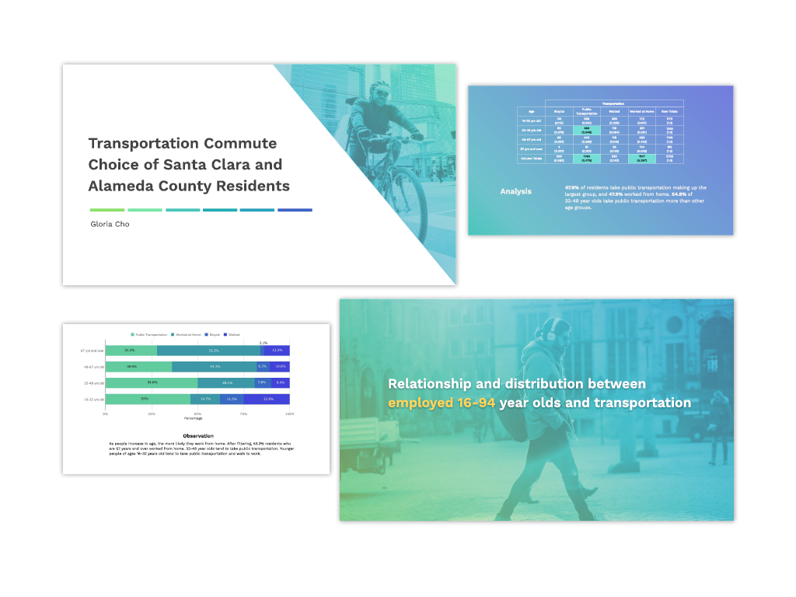
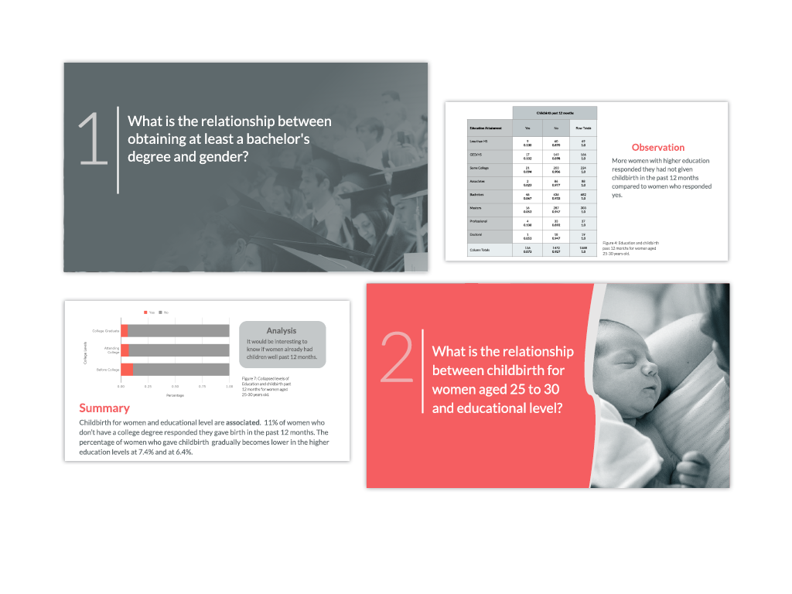
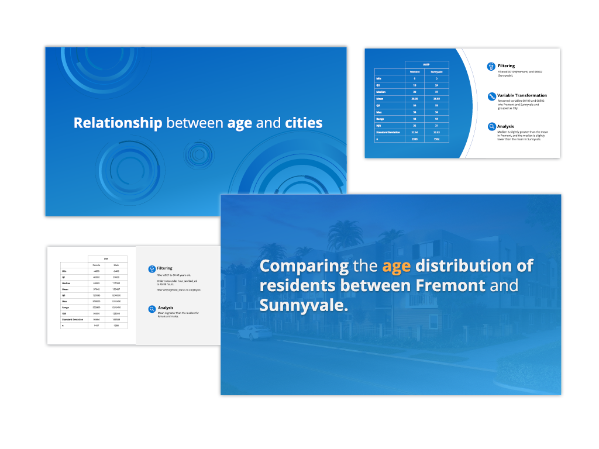

Presentation slides about data and information from class projects
My project process:
1. Filter and analyze data.
2. Take note of distributions, relationship between variables, and confidence intervals.
3. Sketch layout of my presentation and have a color theme in mind to tell the story.
4. Create icons, graphics, tables, graphs in Illustrator and Google Slides. Search for free commercial use photos for the presentation.
5. Ask for feedback from group about the presentation. Make revisions based on feedback.

Transportation
Designed presentation about commute choices in the bay area based on a data set sourced from the bay area census
Tools: Google slides, Tableau, and Illustrator

Education and Motherhood
Designed presentation about the relationships between motherhoood and educational attainment based on a data set sourced from the bay area census
Tools: Google slides, Tableau, and Illustrator

Age and Cities
Designed presentation about the relationships between age and location based on a data set sourced from the bay area census
Tools: Google slides, Tableau, and Illustrator